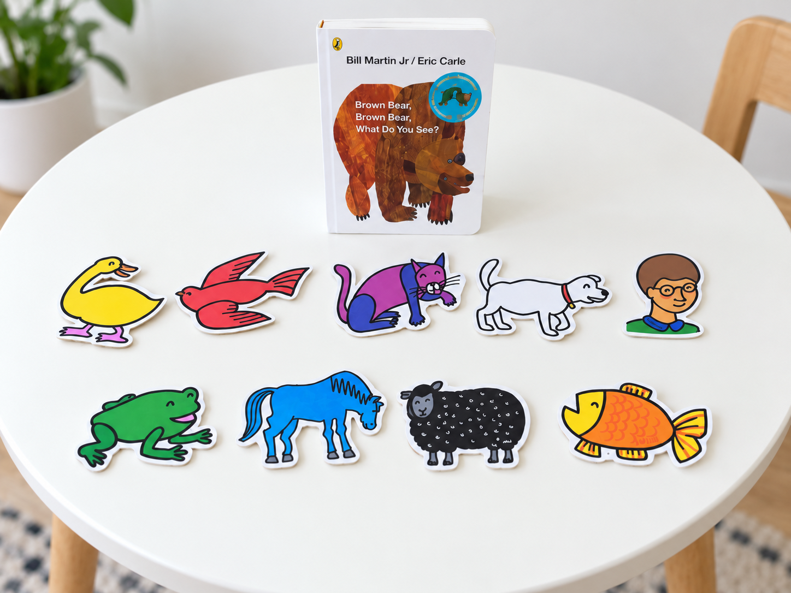
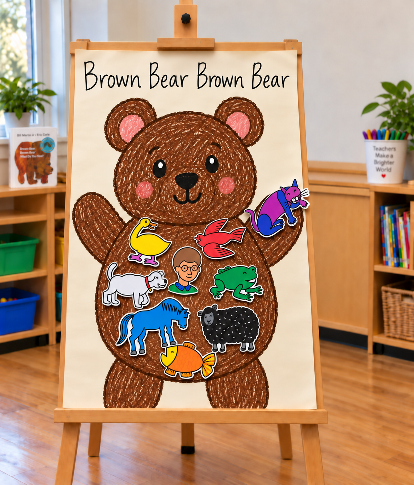

Brown Bear, Brown Bear
Learning Goals
- Recognise and name colours and animals.
- Develop listening and speaking skills.
- Practise fine motor skills and cooperation.
Materials
- Brown Bear, Brown Bear, What Do You See?
- Large brown bear outline
- Animal stickers/cut-outs
- Crayons or markers

Procedure
Shared Reading
Read the story with the children and encourage them to identify the animals and colours.
Group Artwork
Children work together to colour the large brown bear. Then they choose animal stickers and place them on the bear while naming the animal and colour, for example, “I have a purple cat.”
Review
Gather around the finished artwork and repeat the story pattern:
“Brown Bear, Brown Bear, what do you see?”
“I see a purple cat looking at me.”

EYLF Outcomes
- Outcome 1: Builds confidence and participation.
- Outcome 4: Supports observation, memory and matching skills.
- Outcome 5: Develops language and communication.
Evaluation
Observe whether children can identify colours and animals, join in the story, and take turns during the group activity.